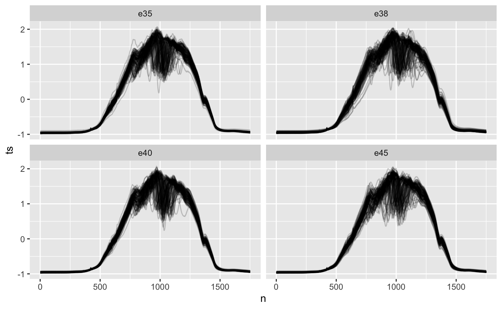
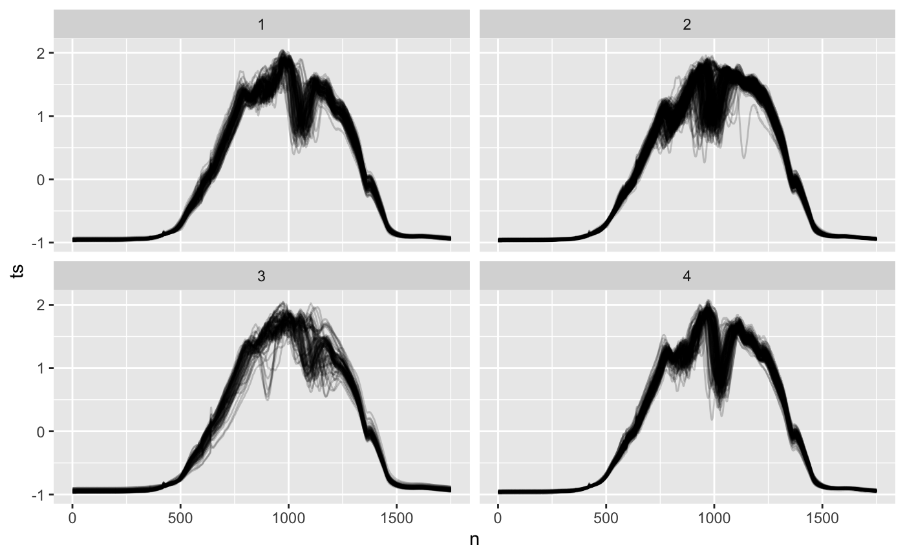

vignettes/time-series-clustering.Rmd
time-series-clustering.RmdClustering is all about finding groups of similar observations based on their features. It’s used for
exploratory data analysis. Especially useful for time series where you can cluster time series of similar “shape”.
labeling groups of time series.
feature engineering for time series classification, using the cluster as a feature. Can also be thought of as a dimensionality reduction technique.
In this guide, I’ll show how you can use tsrecipes to cluster time series with dynamic time warping using the dtwclust R package1.
If you’d like to learn more about dynamic time warping, check out my dynamic time warping article.
For an introduction to clustering in general, UC Business Analytics Programming Guide has an excellent series on clustering, introducing distance metrics and clustering techniques.
With clustering, I think it’s important to evaluate the clusters using objective and subjective criteria.
Subjective criteria include
visualizing the “shape” of time series within clusters to see if there is a pattern. If the shape isn’t obvious, you can try alternative methods or increase the number of clusters. Visualizations of noisy, high-frequency time series may not be useful. In this case, you may want to visualize smoothed trends of the cluster, rather than raw time series.
inspecting clusters for clutter: elements within the cluster that don’t seem to belong. This may indicate you need to increase the number of clusters.
Objective criteria include
checking the number of elements per cluster. Especially with hierarchical clustering, occasionally a cluster will have 90% of the data, which isn’t very useful.
calculating cluster statistics2.
evaluation against known classes, if available. This can even be helpful if only a small amount of labeled data is available.
These principles will serve as a guide while clustering the Ethanol data.
The ethanol dataset has four classes, based on the levels of alcohol in the fuel.
library(tsrecipes) library(tidyverse) #> ── Attaching packages ─────────────────────────────────────────────────── tidyverse 1.2.1 ── #> ✓ ggplot2 3.3.2 ✓ purrr 0.3.4 #> ✓ tibble 3.0.3 ✓ dplyr 1.0.0 #> ✓ tidyr 1.1.0 ✓ stringr 1.4.0 #> ✓ readr 1.3.1 ✓ forcats 0.4.0 #> ── Conflicts ────────────────────────────────────────────────────── tidyverse_conflicts() ── #> x dplyr::filter() masks stats::filter() #> x dplyr::lag() masks stats::lag() library(dtwclust) #> Loading required package: proxy #> #> Attaching package: 'proxy' #> The following objects are masked from 'package:stats': #> #> as.dist, dist #> The following object is masked from 'package:base': #> #> as.matrix #> Loading required package: dtw #> Loaded dtw v1.21-3. See ?dtw for help, citation("dtw") for use in publication. #> dtwclust: #> Setting random number generator to L'Ecuyer-CMRG (see RNGkind()). #> To read the included vignettes type: browseVignettes("dtwclust"). #> See news(package = "dtwclust") after package updates. library(tidymodels) #> ── Attaching packages ────────────────────────────────────────────────── tidymodels 0.1.1 ── #> ✓ broom 0.7.0 ✓ recipes 0.1.13 #> ✓ dials 0.0.8 ✓ rsample 0.0.7 #> ✓ infer 0.5.3 ✓ tune 0.1.1 #> ✓ modeldata 0.0.2 ✓ workflows 0.1.3 #> ✓ parsnip 0.1.3 ✓ yardstick 0.0.7 #> ── Conflicts ───────────────────────────────────────────────────── tidymodels_conflicts() ── #> x scales::discard() masks purrr::discard() #> x dplyr::filter() masks stats::filter() #> x recipes::fixed() masks stringr::fixed() #> x dplyr::lag() masks stats::lag() #> x yardstick::spec() masks readr::spec() #> x recipes::step() masks stats::step()
ethanol %>% rowwise() %>% mutate(n = list(1:1751)) %>% ungroup() %>% unnest(c(ts, n)) %>% ggplot(aes(n, ts)) +#, color = as.factor(id))) + geom_line(aes(group = id), alpha = 0.2, show.legend = FALSE) + facet_wrap(~class)

Visually, it’s hard for me to distinguish between classes. Maybe this indicates it will be hard to classify, or cluster into meaningful groups.
Four classes are known ahead of time, so it seems reasonable to start with four clusters.
step_dtw clusters time series using the dynamic time warping similarity metric. Behind the scenes, step_dtw uses dtwclust. All it’s options are available, but we’ll stick with the defaults.
prepped <- recipe(ethanol) %>% step_dtw(ts, k = 4) %>% prep() ethanol_clusters <- bake(prepped, ethanol)
I always start with visualizing the time series within each cluster.
ethanol_clusters %>% rowwise() %>% mutate(n = list(1:1751)) %>% ungroup() %>% unnest(c(ts, n)) %>% ggplot() + geom_line(aes(n, ts, group = id), alpha = 0.2, show.legend = FALSE) + facet_wrap(~dtwclust_ts)

I see distinct shapes within each cluster. Clusters 1 and 4 both have a clear middle dip, with different wiggles leading the the middle. Cluster 2 has very few wiggles on the right, and cluster 3 is sort of its mirror image, with few wiggles on the left.
All clusters seem a little cluttered: especially 2 and 3 with all the wiggles on the left and right respectively. Cluttered clusters mean we might get more logical groups if we increase the number of clusters.
Comparing the “shape” of the clusters to the shape of the individual classes from the previous section, there doesn’t seem to be a lot of obvious similarity. There’s a lot more variation and a lot less structure to the class plots.
The clusters appear logically grouped, but they don’t necessarily look like the classes. Fortunately the ethanol dataset is labeled. We can test to see if the groups are predictive of the outcome.
mm_model <- ethanol_clusters %>% mutate(dtwclust_ts = as.factor(dtwclust_ts)) %>% nnet::multinom(class ~ dtwclust_ts, data = .) #> # weights: 20 (12 variable) #> initial value 698.692358 #> iter 10 value 692.557559 #> final value 692.467993 #> converged
pred_eth <- ethanol_clusters %>% mutate(dtwclust_ts = as.factor(dtwclust_ts)) %>% mutate(pred = predict(mm_model, ., type = "class")) pred_eth %>% group_by(class, pred) %>% summarise(n = n()) %>% group_by(pred_correct = class == pred) %>% summarise(n = sum(n)) %>% mutate(percent = n / sum(n)) #> `summarise()` regrouping output by 'class' (override with `.groups` argument) #> `summarise()` ungrouping output (override with `.groups` argument) #> # A tibble: 2 x 3 #> pred_correct n percent #> <lgl> <int> <dbl> #> 1 FALSE 354 0.702 #> 2 TRUE 150 0.298
Predicting the class based on the cluster is only 31% accurate. Better than random chance (25%), but still not great.
Based on this analysis, I bet the clustering will be more predictive of the class if there are more clusters.
If you are following along, you may have noticed that clustering takes a long time.
One expensive operation is calculating the distance matrix3. This must be done for every pair of observations. For 500 observations, that’s 124,750 unique pairs4.
For each pair, you also need to calculate the dynamic time warping distance, which has a computational complexity of \(O(N^2)\)5.
Fortunately, the dtwclust::tsclust lets you precompute the the similarity matrix and supply that to the cluster algorithms. Care must be taken here to avoid data leakage; make sure the distance matrix is only computed on the training data.
Using the precomputed distance matrix, it’s possible to tune the number of clusters much faster than otherwise (although not necessarily recommended: see the next section).
distmat <- prepped$steps[[1]]$dtwclust$ts@distmat
dtw_options = list(control = dtwclust::partitional_control(distmat = distmat)) rec <- recipe(ethanol, var = names(ethanol), roles = c("id", "outcome", "input")) %>% step_dtw(ts, k = tune(), options = dtw_options) %>% step_mutate_at(all_predictors(), fn = factor)
validation_set <- tibble( splits = list(make_splits( list(analysis = 1:504, assessment = 1:504), data = ethanol )) ) %>% new_rset(c(id = "validation"), subclass = "rset")
tune_results <- workflow() %>% add_model(multinom_reg() %>% set_engine("nnet")) %>% add_recipe(rec) %>% tune_grid( resamples = validation_set, grid = expand_grid(k = c(4, 8, 16, 32, 64)) )
tune_results %>% collect_metrics() %>% filter(.metric == "accuracy") %>% select(k, mean) #> # A tibble: 5 x 2 #> k mean #> <dbl> <dbl> #> 1 4 0.335 #> 2 8 0.333 #> 3 16 0.379 #> 4 32 0.409 #> 5 64 0.472
Increasing the number of clusters does make the feature more useful in predicting the outcome. With too many clusters, the usefulness starts to decrease. There may be more correlation with the class, but you can no longer visualize and understand the characteristics of certain clusters.
If the goal is to simplify increase the classification accuracy, rather than understanding similar groups, there are better and faster ways.
Tuning clusters is not necessarily something I’d recommend. Clustering takes a long time, even if we are using the precomputed distance matrix.
And there are much better options for dimensionality reduction for time series. Predicting the class using 8 discrete cosine transform coefficients is almost as accurate as predicting the class with 64 clusters. 32 coefficients brings the accuracy to 92%. Using step_dct is also significantly faster.
rec <- recipe(ethanol, var = names(ethanol), roles = c("id", "outcome", "input")) %>% step_dct(ts, k = tune()) tune_results <- workflow() %>% add_model(multinom_reg() %>% set_engine("nnet")) %>% add_recipe(rec) %>% tune_grid( resamples = validation_set, grid = expand_grid(k = c(4, 8, 16, 32, 64)) ) #> Warning in `[.tbl_df`(x, is.finite(x <- as.numeric(x))): NAs introduced by #> coercion tune_results %>% collect_metrics() %>% filter(.metric == "accuracy") %>% select(k, mean) #> # A tibble: 5 x 2 #> k mean #> <dbl> <dbl> #> 1 4 0.312 #> 2 8 0.417 #> 3 16 0.792 #> 4 32 0.919 #> 5 64 0.925
Many clustering techniques and options are available in available in dtwclust::tsclust. I recommend reading the documentation if you aren’t satisified with the defaults.
Additionally, step_dtw only allows tuning the number the number of clusters, but if you want more flexibility look into dtwclust::compare_clusterings.
You can also cluster time series using the discrete cosine transform coefficients found using step_dct. These features are uncorrelated, so you are free to use traditional distance metrics and clustering techniques.↩︎
I won’t cover clustering statistics here, but the UC Business Analytics Programming Guide series has many examples.↩︎
Also called the dissimilarity matrix.↩︎
500 choose 2↩︎
Some improvements can be made. dtwclust offers dtw_basic by default, which is significantly faster, with fewer features. And the theoretical computational complexity is \(O(n^2/\log\log(n))\), although I don’t know if this has been implemented anywhere, or if its technically feasible to do so.↩︎